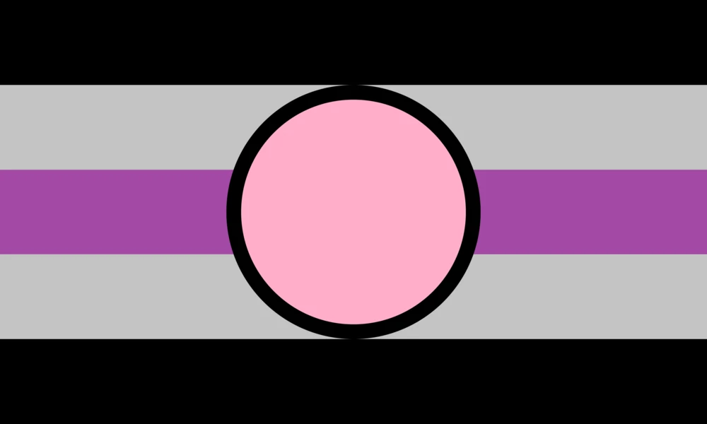
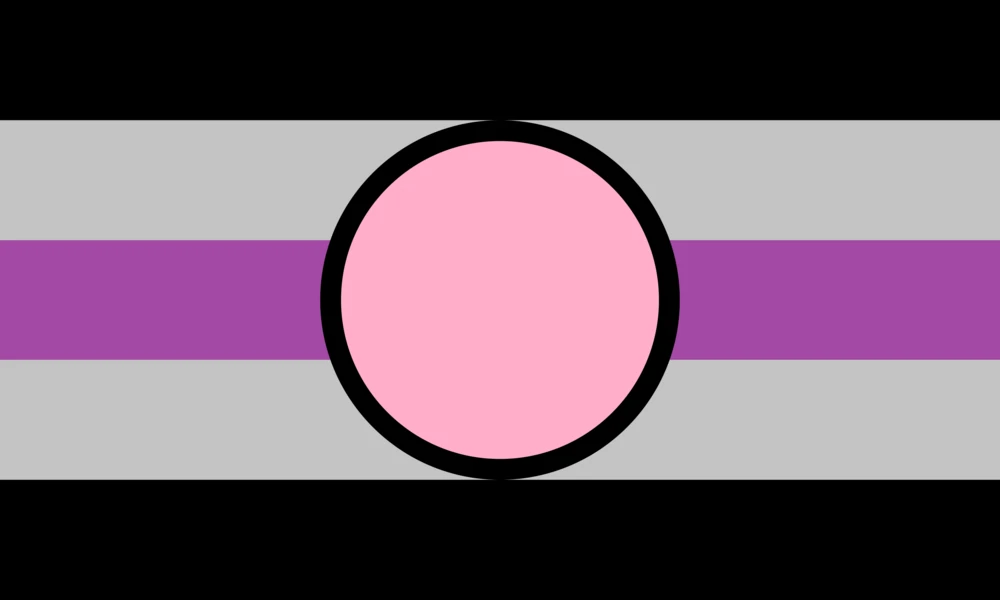

Haii, Hello im mapel. This website is for something I don't know what for yet, but this is gonna be a pronouns / Who am I website for now!
Gender: I'm originally born as a boy, so He/Him, but due to a lot of personal reasons including trauma and body dysphoria, I'm actually a trans girl. I go by She/Her.
(Do not worry little one, you will never hurt me with your accidents!)
If you misgender me, it's completely okay. I do not mind it at all. People can call me a he/him if they want to. I will accept it!
Fictional Characters: for context the Fictosexual is a kind of kinky way of saying im obsessed with multiple characters in a way of saying "i would date this character!"
 

Other characters I love from different Games/Fandoms:
Hatsune Miku"Miku is my Anti-Depressant"
Nazrin"I love rats"
Postal Dude"Postal dude is actually me fr fr"
Doomguy"Big buff dude with guns killing satan's children!"